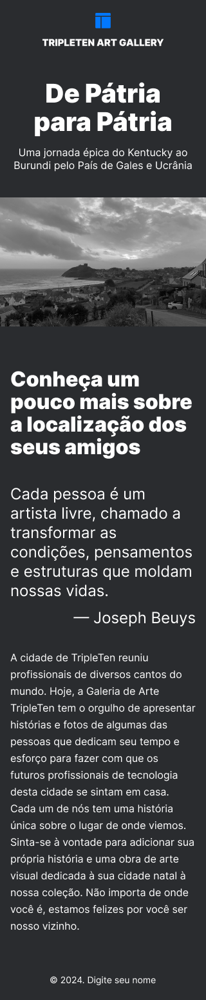
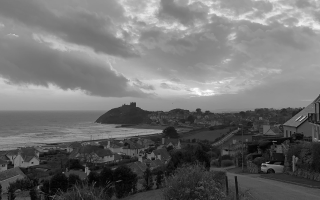
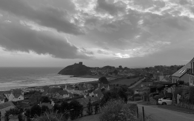

Lugar 1
Website — exemplo.com/lugar1

Texto descritivo do primeiro lugar.
Edite este conteúdo conforme seu projeto.
Um projeto visual sobre lugares, pessoas e memórias compartilhadas.
Este site apresenta uma seleção de lugares marcantes e histórias locais. O layout foi adaptado do design no Figma para uma implementação acessível e responsiva na web.
Você pode explorar a galeria de fotos, ler os textos de cada lugar e, ao final, encontrar uma chamada para ação.
 


Texto descritivo do primeiro lugar.
Edite este conteúdo conforme seu projeto.
Texto descritivo do segundo lugar.
Edite este conteúdo conforme seu projeto.